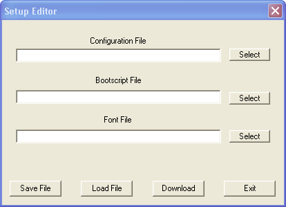

The Setup Editor lets you
specify Font, Bootscript, and Configuration files and download them to BOB-4
in a single operation. This makes it possible to, for instance, configure a
supplemental font memory device, install custom fonts or images, and make BOB-4
display a custom startup screen (via bootscript commands) by clicking one button.
One-click setup operations
are not possible through BOB-4's debug port.
To create a BOB-4 setup file, type in or select previously saved configuration,
font, and bootscript files with the corresponding Select buttons.
If any of these file types will not be used, leave the corresponding field blank.
BOB-4 setup files can be saved for later reuse by clicking Save.
To reload a previously saved BOB-4 setup file, click Load.
To transmit the specified font, bootscript and configuration files and store
them in a connected BOB-4 module, click Download. Communication
settings previously chosen through the Serial Menu
will be used.